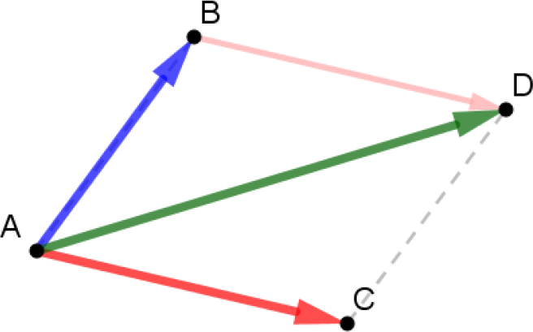

Notion de vecteur
Rappel : Translation
Exemple

$~$
Une translation est un glissement :
- avec une direction donnée $\Rarr$ câble du téléphérique, la droite $(AB)$,
- avec un sens donné $\Rarr$ le téléphérique monte de $A$ vers $B$,
- avec une longueur donnée $\Rarr$ 80m, longueur $AB$
On dit que :
- Le téléphérique $T’$ est l’image du téléphérique $T$ par la translation qui transforme $A$ en $B$.
Translation : Définition
Definition
Soit $A$ et $A’$ deux points distincts du plan.
On appelle translation qui envoie $A$ sur $A’$ la transformation dont l’image $F’$ d’une figure $F$ est obtenue en faisant glisser la figure $F$ :
- selon la direction de la droite $(AA’)$,
- dans le sens de $A$ vers $A’$,
- d’une longueur égale à $AA’$.
Methode
Construire l’image d’une figure par une translation
Soit t la translation qui transforme $A$ en $A’$.
Construction de l’image $B’C’D’E’$ du polygone $BCDE$ par la translation t.

Vecteurs dans le plan
Vecteur : Définition
Definition
Soit t la translation qui envoie $A$ sur $A’$, $B$ sur $B’$ et $C$ sur $C’$.
Les couples de points $(A ; A’)$, $(B ; B’)$ et $(C ; C’)$ définissent un vecteur caractérisé par :
- une direction : celle de la droite $(AA’)$
- un sens : de $A$ vers $A’$
- une longueur : la longueur $AA’$

On note $\vec{u}$ ce vecteur et on écrit : $\quad\vec{u}=\vec{AA’}$
On dit que :
- $\vec{AA’}$ est un représentant de $\vec{u}$
- $\vec{BB’}$ et $\vec{CC’}$ sont également des représentants de $\vec{u}$.
Rem
La longueur d’un vecteur est aussi appelée la norme du vecteur.
On note : $\qquad\norm{\vec{u}}=\norm{\vec{AA’}}=AA’$
Égalité de vecteurs
Definition
Les vecteurs $\vec{AB}$ et $\vec{CD}$ sont égaux lorsqu’ils ont :
- même direction
- même sens
- même longueur.
On note $\quad\vec{AB} = \vec{CD}$.

Rem
On peut poser : $\qquad\vec{u}=\vec{AB}=\vec{CD}$
$\vec{AB}$ et $\vec{CD}$ sont des représentants de $\vec{u}$
Prop
Vecteurs et parallélogramme

Dire que $\vec{AB}$ et $\vec{CD}$ sont égaux revient à dire que $ABDC$ est un parallélogramme.
$$\vec{AB} = \vec{CD} \quad\Leftrightarrow\quad ABDC \text{ parallélogramme}$$
Demo
Si $\vec{AB} = \vec{CD}$, la translation de vecteur $\vec{AB}$ transforme $C$ en $D$.
Les segments $\left[AB\right]$ et $\left[CD\right]$ ont donc même longueur et même direction.
$$\vec{AB} = \vec{CD}\quad\Rightarrow\quad\begin{cases}AB=CD\(AB)\parallel(CD)\end{cases}$$
Donc ABDC est donc un parallélogramme.
Réciproquement :
Les côtés opposés d’un parallélogramme sont :
- parallèles
- de même longueur
Donc $\vec{AB}$ et $\vec{CD}$, définis à l’aide des segments $\left[AB\right]$ et $\left[AB\right]$ d’un parallélogramme $ABDC$, sont égaux.
$$\begin{cases}AB=CD\(AB)\parallel(CD)\end{cases}\quad\Rightarrow\quad\vec{AB} = \vec{CD}$$
Prop
Vecteurs et milieu
Dire que $B$ est le milieu de $\left[AC\right]$ revient à dire que $\vec{AB} = \vec{BC}$.
$$\vec{AB} = \vec{BC}\quad\Leftrightarrow\quad B \text{ mileu de }\left[AC\right]$$

Vecteur nul
Definition
Un vecteur $\vec{AB}$ est nul lorsque $A$ et $B$ sont confondus.
On note : $\vec{AB} = \vec{0}$
Rem
Pour tout point $M$, on a : $\quad\vec{MM} = \vec{0}$
Vecteurs opposés
Definition
Deux vecteurs sont opposés lorsqu’ils ont :
- la même direction
- la même longueur
- et qu’ils sont de sens contraire
On note : $\qquad\vec{AB} = -\vec{DC}$

Rem
$\vec{AB}$ et $\vec{BA}$ sont des vecteurs opposés. $\quad\Rarr\quad\vec{AB}=-\vec{BA}$
Somme de vecteurs
Definition
$\vec{u}$ et $\vec{v}$ sont deux vecteurs quelconques.
On appelle somme de $\vec{u}$ et $\vec{v}$, le vecteur $\vec{w}$ associé à la translation composée des translations de $\vec{u}$ et $\vec{v}$.
$$\vec{u}+\vec{v}=\vec{w}$$
Relation de Chasles
Prop
Relation de Chasles
Pour tous points $A$, $B$ et $C$ du plan, on a :
$$\boxed{\vec{AC} = \vec{AB} +\vec{BC}}$$
Rem
Dans un triangle $ABC$, on a :
$\vec{AB} = \vec{AC} + \vec{CB}\quad$ et $\quad\vec{BC} = \vec{BA} + \vec{AC}$
Methode
Appliquer la relation de Chasles
- $\vec{AM}+\vec{MN}\quad=\vec{AN}$
- $\vec{MP}+\vec{AM}\quad=\vec{AM}+\vec{MP}\quad=\vec{AP}$
- $\vec{OP}+\vec{KO}+\vec{NK}\quad=\vec{NK}+\vec{KO}+\vec{OP}\quad=\vec{NP}$
- $\vec{KN}~-~\vec{ON}+\vec{OK}\quad=\vec{KN}+\vec{NO}+\vec{OK}\quad=\vec{KK}\quad=\vec{0}$
Prop
Dire que $ABDC$ est un parallélogramme revient à dire que $\quad\vec{AD}=\vec{AB} + \vec{AC}$
$$ABDC\quad\text{parallélogramme}\quad\Leftrightarrow\quad\vec{AD}=\vec{AB} + \vec{AC}$$

Différence de deux vecteurs
Definition
$\vec{u}$ et $\vec{v}$ sont deux vecteurs quelconques.
On appelle différence de $\vec{u}$ et de $\vec{v}$, le vecteur noté $\vec{u}-\vec{v}$, tel que :
$$\vec{u} - \vec{v} = \vec{u} + \left(-\vec{v}\right)$$

Methode
Construire un point défini à partir d’une somme de vecteurs
Soit un triangle $ABC$. Construire le point $F$ tel que $\vec{AF} = \vec{BA} + \vec{BC}$
On construit à partir de $A$ (origine de $\vec{AF}$) le vecteur $\vec{BA} + \vec{BC}$ en mettant “bout à bout” les vecteurs $\vec{BA}$ et $\vec{BC}$.
On a ainsi construit un vecteur $\vec{AF}$ et donc le point $F$.